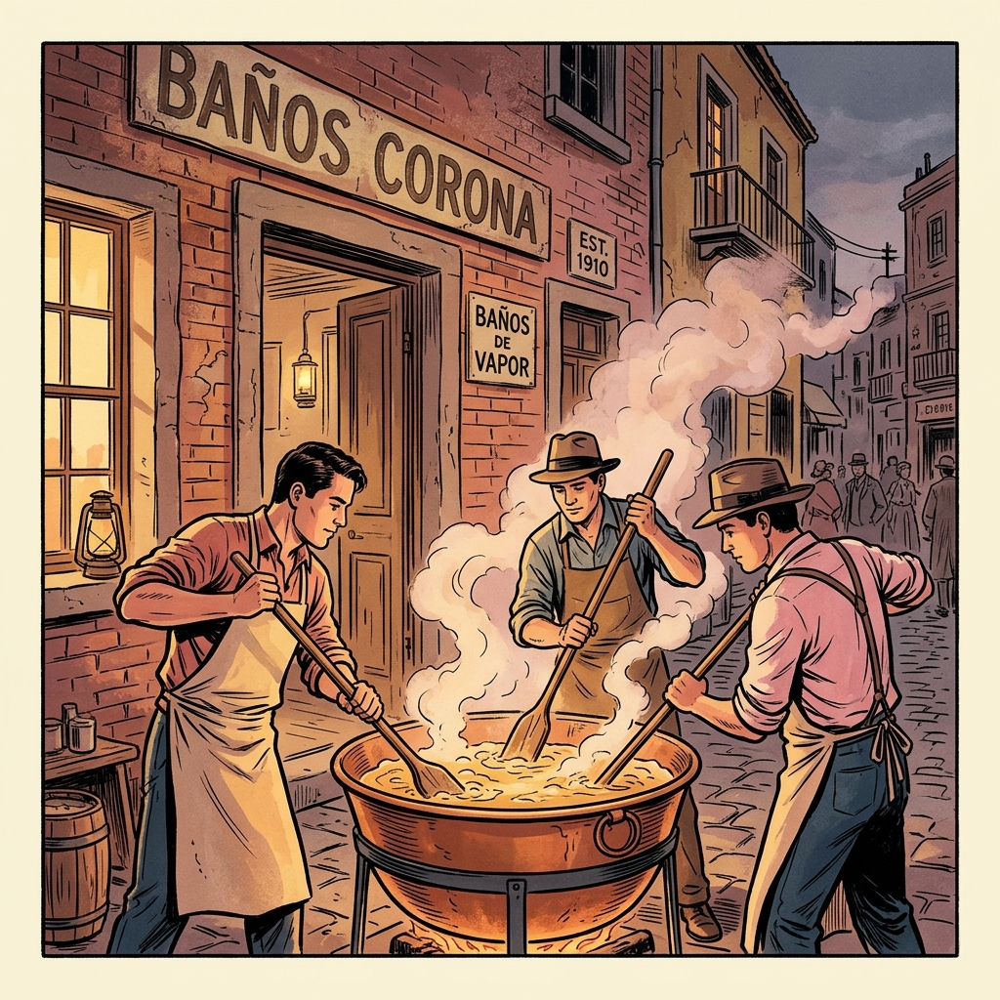
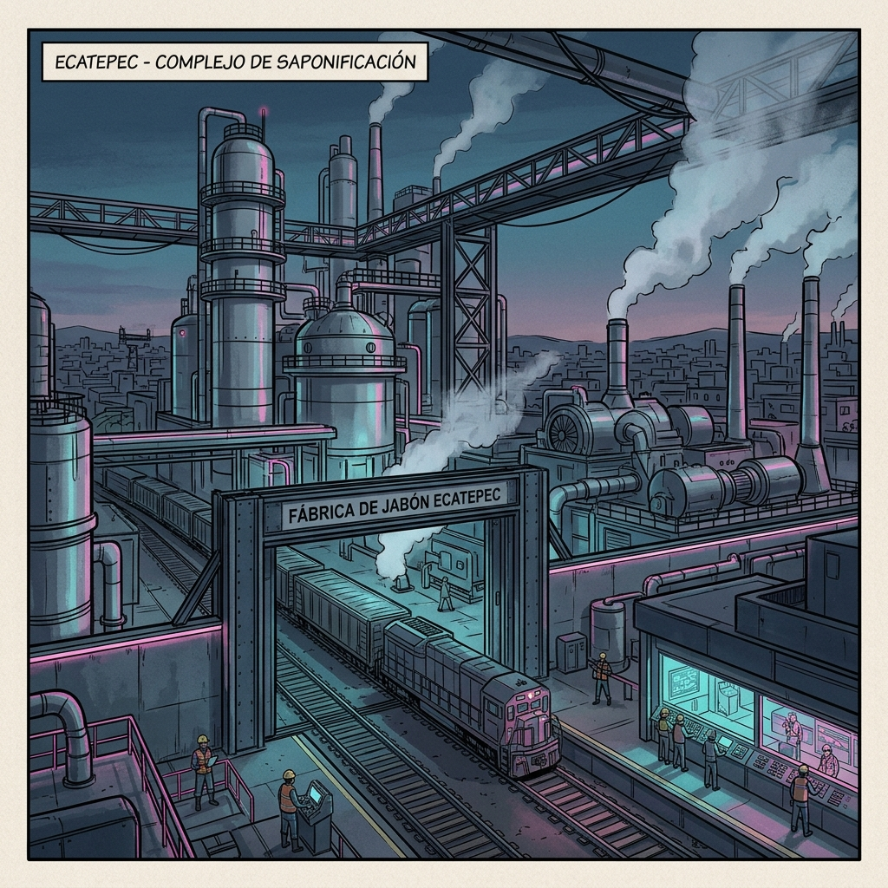
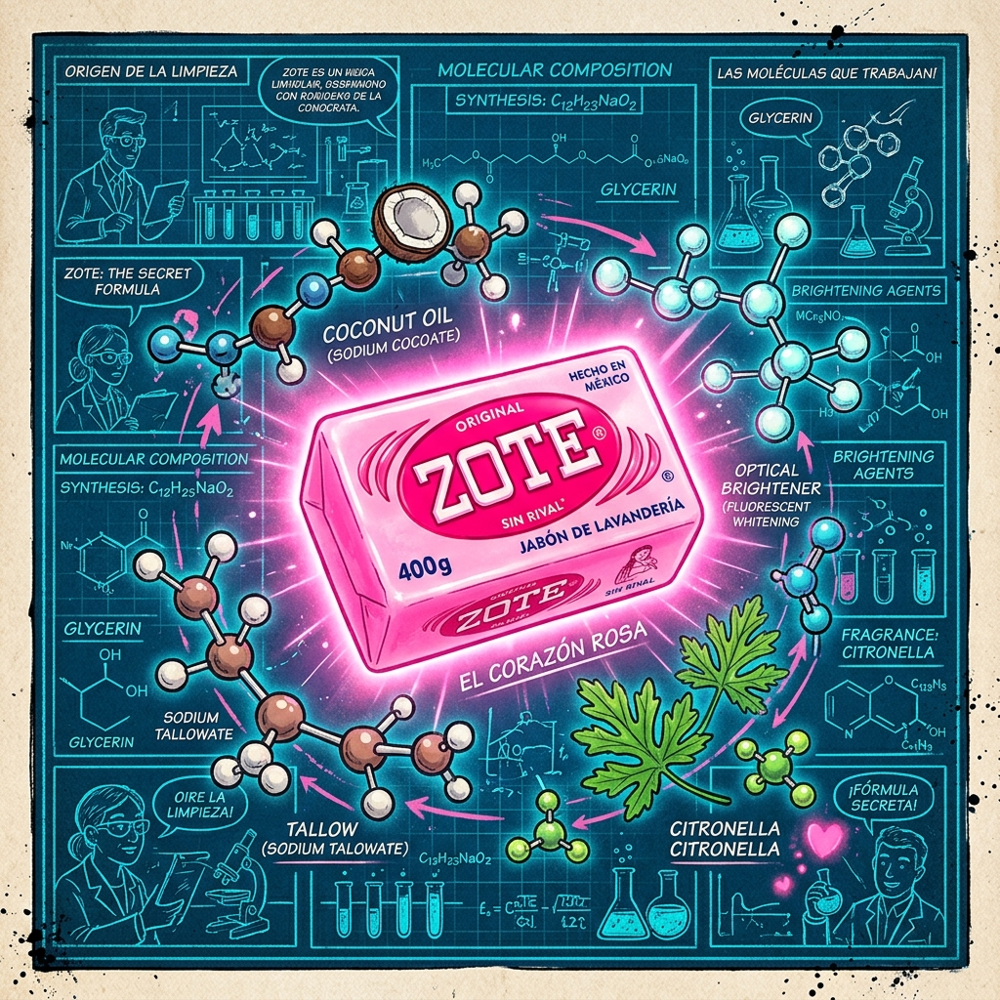
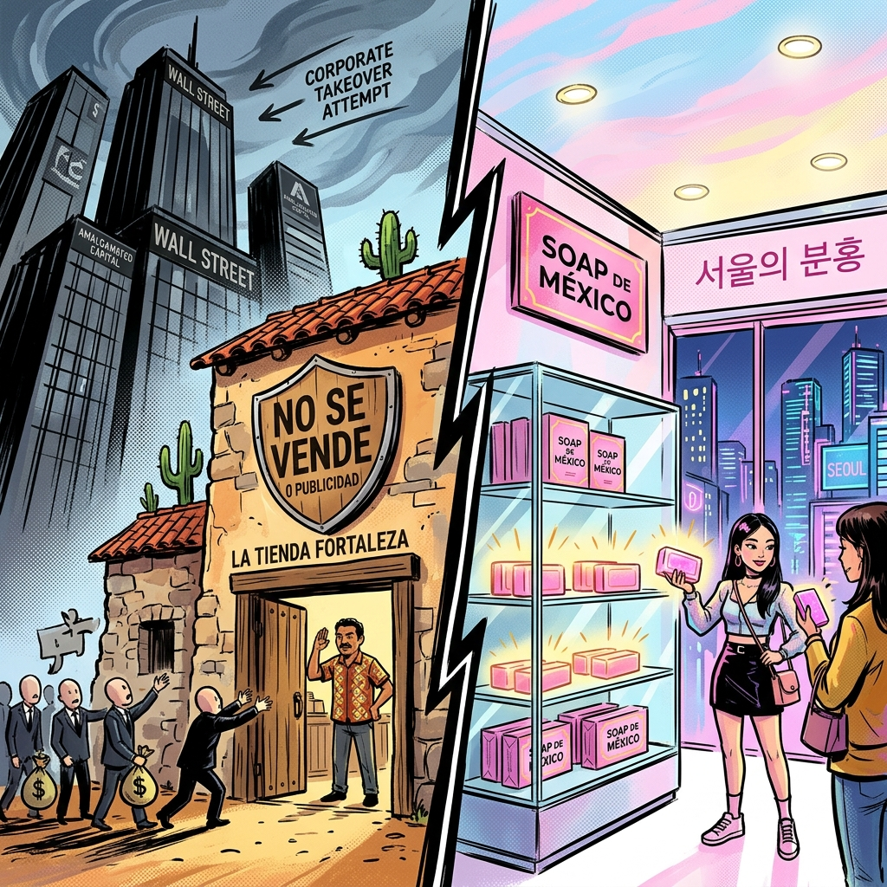
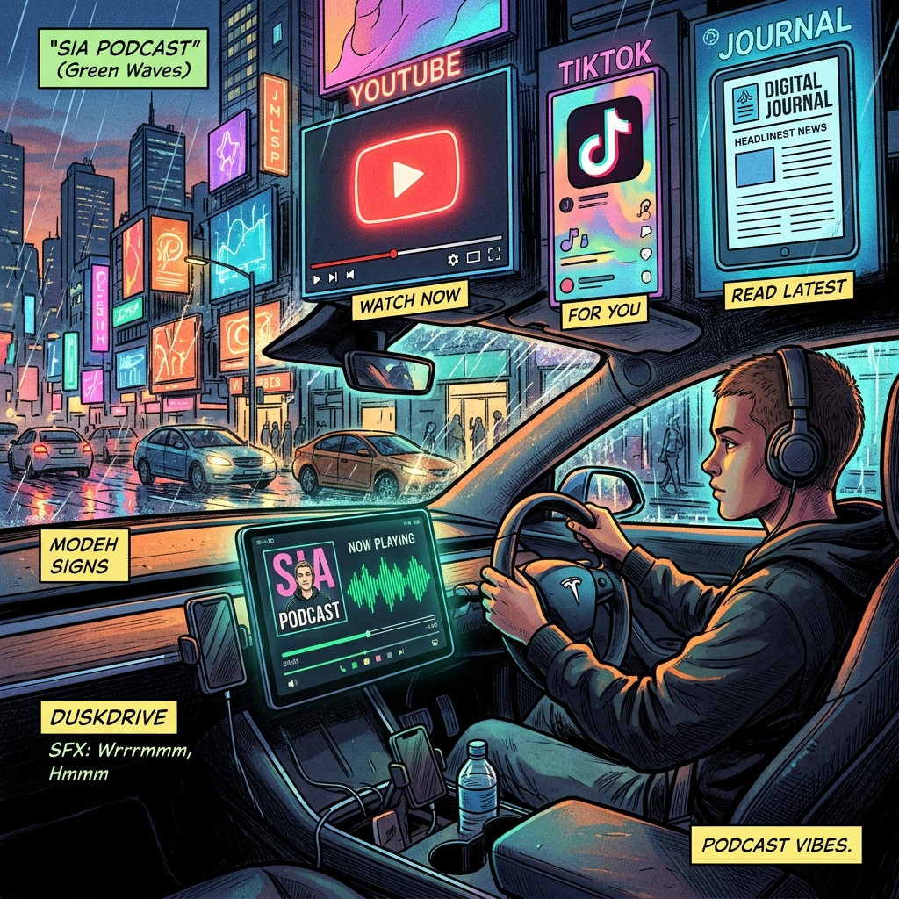

CAPÍTULO 01 • PERALVILLO 1920
🎙️ JORGE

DE TEPATITLÁN A LA CDMX
LOS BAÑOS CORONA DE 1920
“En 1920, Don Esteban González Padilla y sus hermanos instalaron un cazo de cobre en unos viejos baños de vapor en Peralvillo.”
CAPÍTULO 01 • EL ORIGEN DEL NOMBRE
🎙️ DALIA
JABÓN DE MANTECA Y TEQUESQUITE
EL BAUTIZO DEL BARRIO
“La gente del barrio decía: 'Vamos a comprar jabón a La Corona', bautizando para siempre a la fábrica.”
CAPÍTULO 02 • FORTALEZA ECATEPEC
🎙️ JORGE

FERROCARRIL PROPIO + COGENERACIÓN
EL COLOSO DE XALOSTOC
“Su megaplanta en Ecatepec tiene vías de tren propias, cogeneración eléctrica y refinería de glicerina farmacéutica.”
CAPÍTULO 02 • ECONOMÍA CIRCULAR
🎙️ DALIA
AUTOSUFICIENCIA INDUSTRIAL
ROMA, FOCA Y ROSA VENUS
“Fabrican sus propios envases, procesan aceite 1-2-3 y producen detergentes biodegradables Roma y Foca.”
CAPÍTULO 03 • QUÍMICA DEL ZOTE (1970)
🎙️ JORGE

400 GRAMOS • SEBO + ACEITE DE COCO
LA FÓRMULA SECRETA ROSA
“Lanzado en 1970: un jabón-zote de 400g con 66% de ácidos grasos, aceite esencial de citronela y blanqueador óptico.”
CAPÍTULO 03 • BLANQUEADOR ÓPTICO
🎙️ DALIA
EL SECRETO DEL BLANCO PERFECTO
FOTONES DE LUZ ULTRAVIOLETA
“Sus blanqueadores ópticos absorben radiación UV invisible y la reemiten como luz azul, eliminando el tono amarillento.”
CAPÍTULO 04 • DE MÉXICO A COREA DEL SUR
🎙️ JORGE

FUROR EN SEÚL Y RECHAZO A WALL STREET
0% MARKETING • 100% CULTO GLOBAL
“Sin comerciales en TV y sin deudas bancarias, Zote es artículo de culto en Corea del Sur y carnada de pesca en EE.UU.”
CAPÍTULO 05 • ECOSISTEMA TRI-PLATAFORMA
🎙️ DALIA

SPOTIFY • YOUTUBE • TIKTOK (@escucha_sia)
EN TU COCHE O EN VIDEO ILUSTRADO
“🚗 Si vas en tu coche escúchanos en Spotify | 📱 Si quieres ver el cuento ilustrado míralo en YouTube y TikTok.”
CAPÍTULO 05 • sIA JOURNAL
🎙️ JORGE
INVESTIGACIÓN Y FUENTES APA
“Lee el análisis químico e industrial con referencias APA en escucha-sia.github.io. ¡Hasta la próxima!”